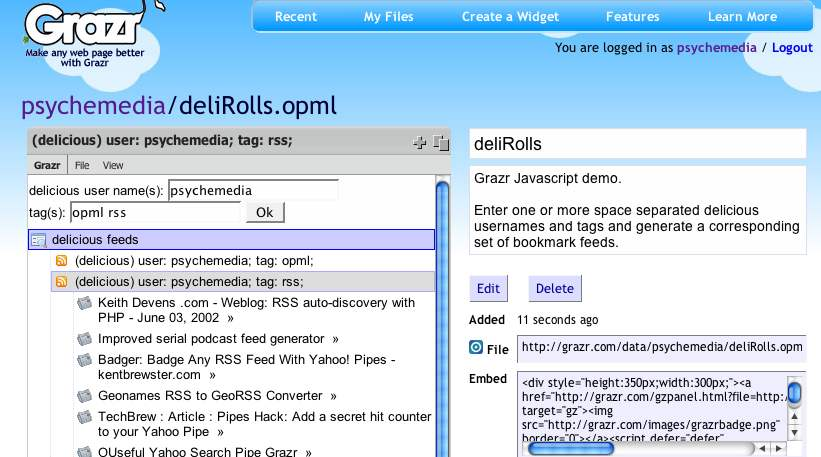

March 20, 2007
deliRoll - Scripting Grazr with Javascript
Yesterday, the folks over at Grazr released serverside support for Javascript contained within GrazrScript OPML files.
What this means is that you can now script the OPML that a Grazr widget displays.
So what, you may say.... so Grazr widgets are now programmable; that is, Grazr can inspect what you have entered into a Grazr form then generate and render an appropriate set of feeds as a result.
I have no time for distractions at the moment but couldn't resist posting a demo, which is actually a minor reworking of some of the code in the rediscovered social bookmarking feedroller:

Enter one or more space separated delicious usernames and/or one or more space separated tag combinations, and a corresponding set of delicious feeds will be automatically generated.
You can view the OPML directly, or view it on the deliRoll page.
Or here:

(You can find several other OPML and GrazrScript generators in the GrazrScript Studio.)
The Javascript support is still lacking one or two js features, but there's more than enough support already to start tinkering with.
One thing I'd like to see (and haven't tried yet - so it may already be supported) is a script include - that is, the ability to load in external Javascript files...
...and support for xmlhttprequest too, of course ;-)
But as I said - plenty to play with in there already... good stuff, chaps :-)
Posted by ajh59 at March 20, 2007 11:46 AM